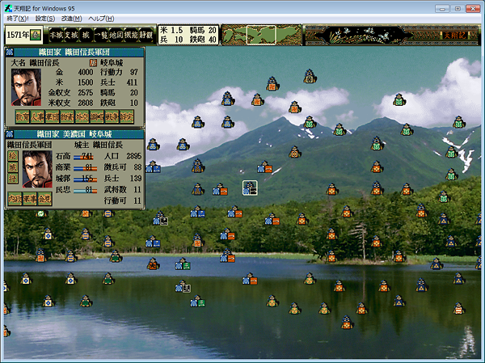
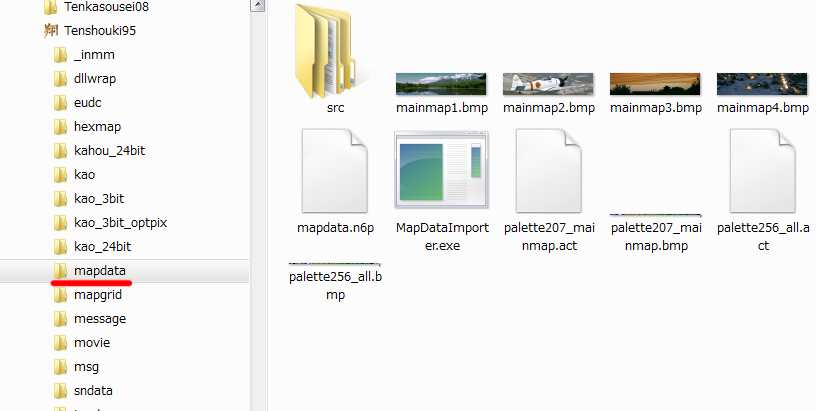
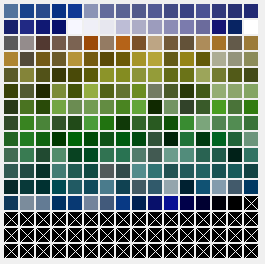
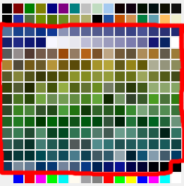

日本全国地図を、別の(自作等の)画像へと入れ替えるツールの提供、
および、その方法の説明となります。
このツールは、春・夏・秋・冬の４種類のメインマップの画像を別の画像へと入れ替えます。

MapDataExpAndImp.zip を解凍し、天翔記フォルダのサブフォルダにmapdataといったサブディレクトリを作成し、 その以下のように展開する。
(※ディレクトリ名等は、何でもかまいません。以下はただの例です。)

主に起きるのは２つのエラーです。エラーが起きるとエラーを表示した状態で止まります。
メインマップで必要となるパレット
palette207_mainmap.bmp(or .act)
カラーパレットを見ればわかりますが、緑系と青系しかほとんどありません。要するに本当に陸･山･海というマップを想定したカラーパレットになっています。

天翔記全体のパレット
palette256_all.bmp(or .act)
赤枠が、天翔記全体のパレットのうち、メインマップで使用されるパレット。

| 画像概要 | コマンド名 | 出力ファイル名 | mapdata.n6p内でのスタート位置 これは｢前に存在する画像の画素数を全て足しこんだもの｣だ。 |
画像の横サイズ | 画像の縦サイズ |
| 春 | MapDataExporter | output1.bmp | 0 | 2720 | 672 |
| 夏 | MapDataExporter | output2.bmp | 1827840 | 2720 | 672 |
| 秋 | MapDataExporter | output3.bmp | 3655680 | 2720 | 672 |
| 冬 | MapDataExporter | output4.bmp | 5483520 | 2720 | 672 |
| 家紋等 | MapDataExporter | output5.bmp | 7311360 | 128 | 416 |
MapDataExporter output2.bmp 1827840 2720 672